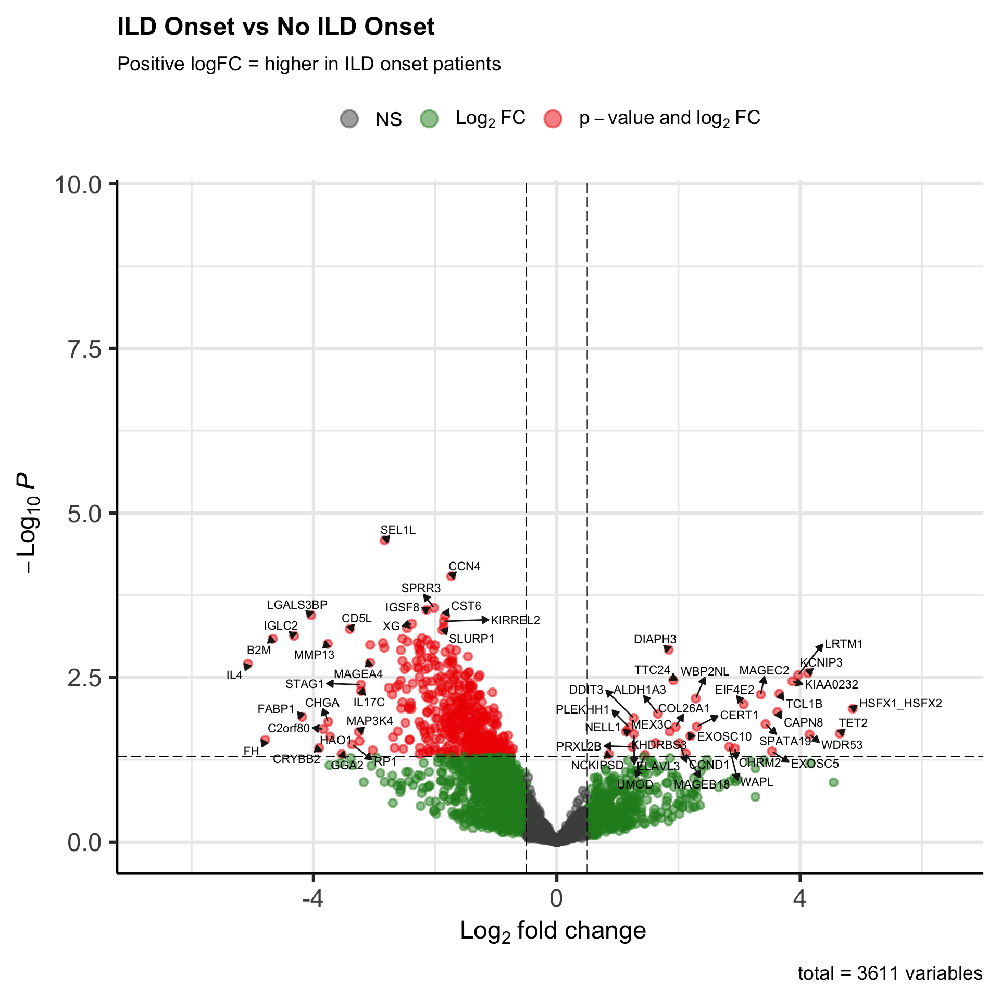
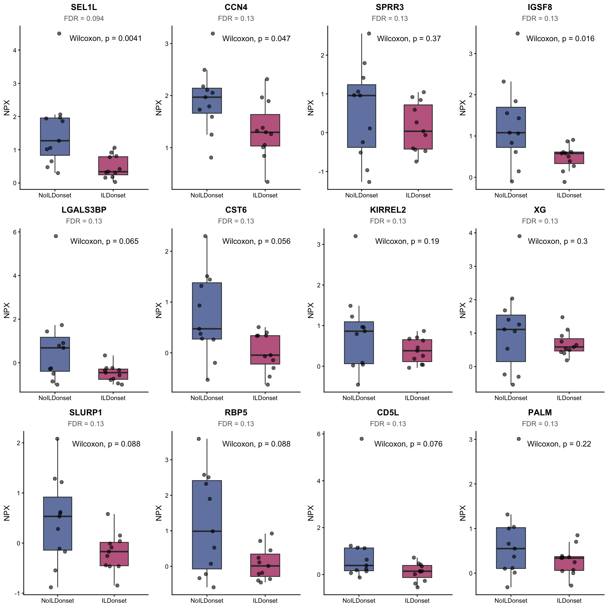
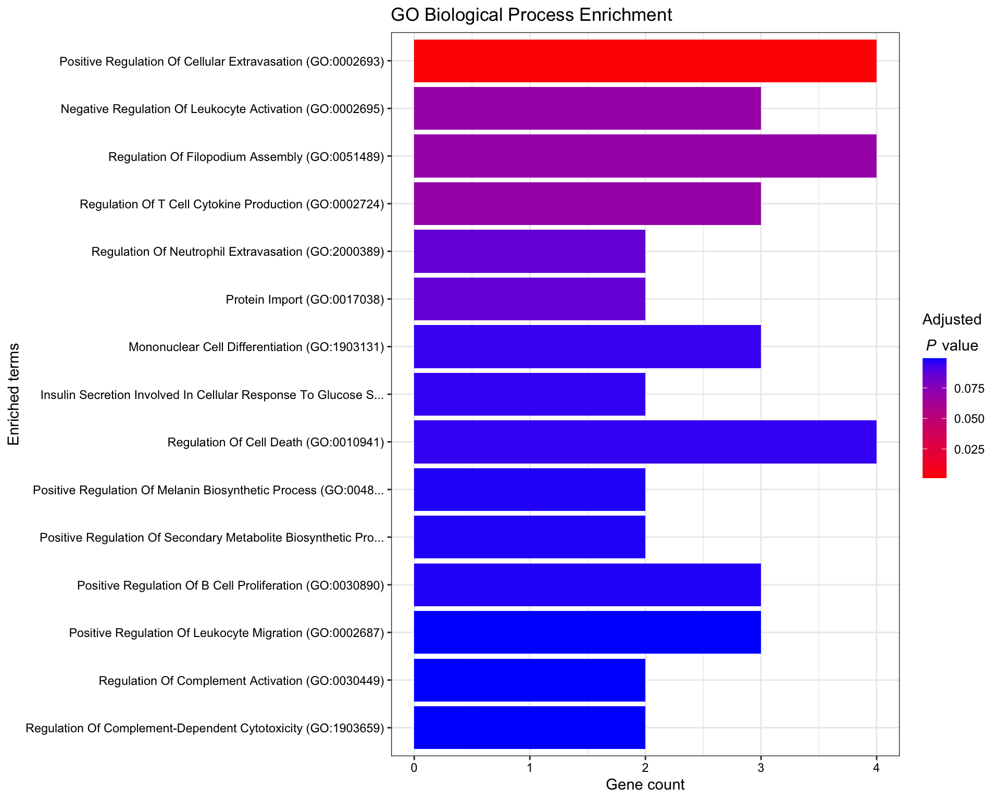

Last updated: 2026-07-10
Checks: 7 0
Knit directory: RESOLVE_SerumProteomics/
This reproducible R Markdown analysis was created with workflowr (version 1.7.2). The Checks tab describes the reproducibility checks that were applied when the results were created. The Past versions tab lists the development history.
Great! Since the R Markdown file has been committed to the Git repository, you know the exact version of the code that produced these results.
Great job! The global environment was empty. Objects defined in the global environment can affect the analysis in your R Markdown file in unknown ways. For reproduciblity it’s best to always run the code in an empty environment.
The command set.seed(20250204) was run prior to running
the code in the R Markdown file. Setting a seed ensures that any results
that rely on randomness, e.g. subsampling or permutations, are
reproducible.
Great job! Recording the operating system, R version, and package versions is critical for reproducibility.
Nice! There were no cached chunks for this analysis, so you can be confident that you successfully produced the results during this run.
Great job! Using relative paths to the files within your workflowr project makes it easier to run your code on other machines.
Great! You are using Git for version control. Tracking code development and connecting the code version to the results is critical for reproducibility.
The results in this page were generated with repository version 4077a53. See the Past versions tab to see a history of the changes made to the R Markdown and HTML files.
Note that you need to be careful to ensure that all relevant files for
the analysis have been committed to Git prior to generating the results
(you can use wflow_publish or
wflow_git_commit). workflowr only checks the R Markdown
file, but you know if there are other scripts or data files that it
depends on. Below is the status of the Git repository when the results
were generated:
Ignored files:
Ignored: .DS_Store
Ignored: .Rhistory
Ignored: .Rproj.user/
Ignored: Screenshot-2024-08-22-at-11.31.50_files/
Ignored: analysis/.DS_Store
Ignored: data/.DS_Store
Ignored: output/.DS_Store
Ignored: output/3.1_veSSc_Athritis /
Ignored: output/3.2_veSScarthritis_vs_SScarthritis /
Ignored: output/3.2_veSScarthritis_vs_SScarthritis/
Ignored: output/Analysis_Cosimo/
Untracked files:
Untracked: MRSS_delta_correlations.png
Untracked: analysis/OLD/
Untracked: analysis/output/
Untracked: code/11102024_PreliminaryLook_Preprocessing.Rmd
Untracked: code/14102024_MetaData.csv
Untracked: code/Final_FinalList_ArthritisControls_2024.08.15.xlsx
Untracked: data/ASTRID_ILDonset_PROTEOMIC_CB3groups.xlsx
Untracked: data/ASTRID_ILDonset_PROTEOMIC_COSIMO.xlsx
Untracked: data/Metadata_veSSC.xlsx
Untracked: data/Metadata_veSSC_vs_SSc_arthritis_final.xlsx
Untracked: data/P2024-199-OLI_80_NPX_2024-10-10.parquet
Untracked: data/PEA/
Untracked: data/PRECISE_Pietro.xlsx
Untracked: data/metadata.xlsx
Untracked: output/AnalysisD_PathwayEnrichment/
Untracked: output/ILD_Onset_Analysis/
Untracked: output/Pietro_InterferonScore/
Untracked: output/PreSScArthritis_vs_SScArthritis/
Untracked: output/PreSSc_Synovitis/
Untracked: output/SSc_Skin_Regression_Analysis/
Untracked: output/SSc_veSSc_vs_SSc_Arthritis_Analysis_Clean/
Untracked: output/UpdatedAnalysisPipelineCosimo/
Untracked: output/arthritis_analysis/
Untracked: site_libs/
Unstaged changes:
Modified: .Rprofile
Modified: .gitattributes
Modified: .gitignore
Modified: README.md
Modified: RESOLVE_SerumProteomics.Rproj
Modified: _workflowr.yml
Deleted: analysis/PreSSc/PreSScArthritis_vs_SScArthritis.Rmd
Deleted: analysis/SSc_Skin_Regression_Analysis.Rmd
Modified: analysis/about.Rmd
Modified: analysis/license.Rmd
Modified: code/README.md
Modified: data/README.md
Modified: output/README.md
Note that any generated files, e.g. HTML, png, CSS, etc., are not included in this status report because it is ok for generated content to have uncommitted changes.
These are the previous versions of the repository in which changes were
made to the R Markdown
(analysis/SSc_ILD_Onset_Analysis_Clean.Rmd) and HTML
(docs/SSc_ILD_Onset_Analysis_Clean.html) files. If you’ve
configured a remote Git repository (see ?wflow_git_remote),
click on the hyperlinks in the table below to view the files as they
were in that past version.
| File | Version | Author | Date | Message |
|---|---|---|---|---|
| Rmd | 4077a53 | astridhofman7 | 2026-07-10 | Update index and analyses |
| html | 9002e6b | astridhofman7 | 2026-07-09 | Force update docs |
This analysis identifies serum proteins associated with ILD onset in SSc patients.
Analytical approach:
| Analysis | Comparison | Description |
|---|---|---|
| Binary | ILD onset vs No ILD onset | Identifies proteins differentially expressed between groups |
Covariates:
entrytime (year of study entry): Included to adjust for
potential batch effects# =============================================================================
# PURPOSE: Load required R packages
#
# Data I/O:
# - arrow: Read parquet files (Olink output format)
# - readxl: Read Excel metadata
# - here: Relative file paths for reproducibility
#
# Data manipulation:
# - dplyr: Data wrangling (filter, mutate, select, etc.)
# - tidyr: Reshaping data (long <-> wide format)
# - tibble: For rownames_to_column conversion
#
# Statistical analysis:
# - limma: Linear models for differential expression
# Designed for microarray/proteomics; handles small samples well
# Uses empirical Bayes to borrow information across proteins
#
# Visualization:
# - ggplot2: General plotting
# - EnhancedVolcano: Publication-quality volcano plots
# - enrichR: Pathway enrichment analysis
# =============================================================================
library(arrow)
library(readxl)
library(here)
library(dplyr)
library(tidyr)
library(tibble)
library(limma)
library(ggplot2)
library(EnhancedVolcano)
library(enrichR)# =============================================================================
# PURPOSE: Load raw data files
#
# Two data sources:
# 1. NPX data: Olink's Normalized Protein eXpression values (log2 scale)
# - Already normalized across plates by Olink
# - Long format: one row per protein-sample combination
#
# 2. Metadata: Clinical data including ILD onset status
# =============================================================================
# UPDATE THESE PATHS to your local files
olink <- read_parquet(here::here("data", "P2024-199-OLI_80_NPX_2024-10-10.parquet"))
metadata <- read_excel(here::here("data", "ASTRID_ILDonset_PROTEOMIC_COSIMO.xlsx"), sheet = 1)
cat("Olink data:", nrow(olink), "rows\n")Olink data: 516800 rowscat("Metadata:", nrow(metadata), "samples\n")Metadata: 22 samples# =============================================================================
# PURPOSE: Merge proteomics data with clinical metadata
#
# WHY: NPX data contains only sample IDs and protein values.
# We need to link these to clinical outcomes (ILD onset)
# to test which proteins associate with disease progression.
#
# KEY STEPS:
# 1. Create matching ID columns for merge
# 2. Remove unnecessary columns that cause issues
# 3. Merge NPX with metadata
# 4. Filter to samples with clinical data
# =============================================================================
# Remove columns that are not needed and may cause issues
metadata$`Id Visit V2018` <- NULL
# Create matching ID columns
# WHY: Olink uses "SampleID", metadata uses "Barcode" — same values, different names
metadata$patient <- metadata$Barcode
olink$patient <- olink$SampleID
# Merge NPX with metadata
merged <- merge(olink, metadata, by = "patient", all = TRUE)
# Keep only samples with clinical data (DPS = disease status) OR plate controls
# WHY: Plate controls (CTRL samples) are needed for QC but have no clinical data
# Samples without DPS cannot be used in the analysis
filtered_df <- merged %>%
filter(!is.na(DPS) | grepl("CTRL", SampleID))
cat("Merged data:", nrow(merged), "rows\n")Merged data: 516800 rowscat("Filtered data:", nrow(filtered_df), "rows\n")Filtered data: 201280 rows# =============================================================================
# PURPOSE: Prepare clinical metadata for statistical modeling
#
# KEY STEPS:
# 1. Create ILD status variable from numeric indicator
# 2. Convert categorical variables to factors
# 3. Handle entry time (for batch effect adjustment)
# =============================================================================
# Create readable ILD status variable
# WHY: ILDonset_1yes0no is numeric (1/0); we need a factor for modeling
metadata$ild_status <- ifelse(metadata$ILDonset_1yes0no == 1, "ILDonset", "NoILDonset")
# Factor categorical variables for limma
# WHY: limma uses factor levels to define contrasts
metadata$ILDonset_1yes0no <- factor(metadata$ILDonset_1yes0no)
metadata$DPS <- factor(metadata$DPS)
# Extract entry year for batch effect adjustment
# WHY: Year of sample collection may introduce batch effects
# (different reagent lots, operators, storage times)
metadata$entrytime <- substr(metadata$Eingangsdt., 1, 4)
metadata$entrytime <- factor(metadata$entrytime)
cat("ILD status distribution:\n")ILD status distribution:print(table(metadata$ild_status))
ILDonset NoILDonset
11 11 cat("\nEntry year distribution:\n")
Entry year distribution:print(table(metadata$entrytime))
2013 2014 2016 2017 2018 2019 2020 2022 2023
1 2 2 3 2 6 1 4 1 # =============================================================================
# PURPOSE: Reshape NPX data from long to wide format for limma
#
# WHY: Olink outputs data in "long" format (one row per protein-sample)
# limma requires a matrix: rows = proteins, columns = samples
# This is the standard format for differential expression analysis
# =============================================================================
# Extract the three columns we need
matrix_df <- as.data.frame(cbind(
filtered_df$patient,
filtered_df$NPX,
filtered_df$OlinkID
))
colnames(matrix_df) <- c("Patient", "Value", "Protein")
# Reshape: long → wide (proteins as rows, patients as columns)
wide_data <- tidyr::pivot_wider(matrix_df, names_from = Patient, values_from = Value)
wide_data <- as.data.frame(wide_data)
# Set protein IDs as rownames (limma convention)
rownames(wide_data) <- wide_data$Protein
# Remove non-sample columns (Protein column, plate controls, NA columns)
# WHY: We only want patient samples in the expression matrix
cols_to_remove <- c("Protein")
# Also identify plate control columns (contain "CTRL" or are NA)
ctrl_cols <- grep("CTRL|CONTROL", colnames(wide_data), value = TRUE)
na_cols <- colnames(wide_data)[colnames(wide_data) == "NA"]
cols_to_remove <- c(cols_to_remove, ctrl_cols, na_cols)
data <- wide_data[, !(colnames(wide_data) %in% cols_to_remove), drop = FALSE]
# Convert to numeric matrix
# WHY: pivot_wider creates character columns; limma needs numeric
data_matrix <- as.matrix(data)
data_matrix2 <- apply(data_matrix, 2, as.numeric)
rownames(data_matrix2) <- rownames(data_matrix)
cat("Expression matrix:", nrow(data_matrix2), "proteins x", ncol(data_matrix2), "samples\n")Expression matrix: 5440 proteins x 22 samples# =============================================================================
# PURPOSE: Ensure expression matrix columns match metadata rows
#
# WHY THIS IS CRITICAL:
# limma assumes row i of the design matrix corresponds to column i of the
# expression matrix. If these are misaligned, you're testing the wrong
# samples against the wrong clinical outcomes — results will be meaningless.
#
# This is the #1 source of errors in differential expression analysis!
# =============================================================================
# First, filter metadata to only include samples in the expression matrix
metadata_aligned <- metadata %>%
filter(Barcode %in% colnames(data_matrix2))
# Check alignment BEFORE fixing
cat("BEFORE alignment:\n")BEFORE alignment:cat("Matrix columns (first 5):", head(colnames(data_matrix2), 5), "\n")Matrix columns (first 5): 112107808410 112645837208 113246727508 113318097718 113472719307 cat("Metadata Barcode (first 5):", head(metadata_aligned$Barcode, 5), "\n")Metadata Barcode (first 5): S675701 118016208009 113472719307 S692302 118149252410 cat("Aligned:", identical(colnames(data_matrix2), metadata_aligned$Barcode), "\n\n")Aligned: FALSE # Reorder BOTH to ensure alignment
# Method: Sort both by the same ID
data_matrix2 <- data_matrix2[, order(colnames(data_matrix2))]
metadata_aligned <- metadata_aligned[order(metadata_aligned$Barcode), ]
# Verify alignment AFTER fixing
cat("AFTER alignment:\n")AFTER alignment:cat("Matrix columns (first 5):", head(colnames(data_matrix2), 5), "\n")Matrix columns (first 5): 112107808410 112645837208 113246727508 113318097718 113472719307 cat("Metadata Barcode (first 5):", head(metadata_aligned$Barcode, 5), "\n")Metadata Barcode (first 5): 112107808410 112645837208 113246727508 113318097718 113472719307 cat("Aligned:", identical(colnames(data_matrix2), metadata_aligned$Barcode), "\n")Aligned: TRUE # STOP if not aligned — do not proceed with wrong results
stopifnot("Sample alignment failed!" = identical(colnames(data_matrix2), metadata_aligned$Barcode))
cat("\n✓ Alignment verified\n")
✓ Alignment verified# =============================================================================
# PURPOSE: Test each protein for differential expression between groups
#
# WHY LIMMA:
# - Designed for small sample sizes (borrows strength across proteins)
# - Empirical Bayes shrinkage stabilizes variance estimates
# - Well-validated for proteomics data
#
# MODEL: ~0 + ild_status + entrytime
# - "~0 + ild_status": Estimate mean for each group separately (no intercept)
# This makes contrast specification cleaner
# - "+ entrytime": Adjust for year of entry (batch effect)
#
# CONTRAST: ILDonset - NoILDonset
# - Positive logFC = higher in ILD onset patients
# - Negative logFC = lower in ILD onset patients (higher in controls)
# =============================================================================
# Set factor with reference level
# WHY: "NoILDonset" first means positive logFC = higher in ILDonset
metadata_aligned$ild_status <- factor(metadata_aligned$ild_status,
levels = c("NoILDonset", "ILDonset"))
# Create design matrix
design <- model.matrix(~0 + ild_status + entrytime, data = metadata_aligned)
# Clean column names (remove "ild_status" prefix for readability)
colnames(design) <- gsub("ild_status", "", colnames(design))
cat("Design matrix:\n")Design matrix:print(head(design)) NoILDonset ILDonset entrytime2014 entrytime2016 entrytime2017 entrytime2018
1 0 1 0 0 0 1
2 0 1 0 0 0 1
3 0 1 0 0 0 0
4 0 1 0 0 0 0
5 1 0 0 0 0 0
6 0 1 0 0 0 0
entrytime2019 entrytime2020 entrytime2022 entrytime2023
1 0 0 0 0
2 0 0 0 0
3 1 0 0 0
4 1 0 0 0
5 1 0 0 0
6 1 0 0 0cat("\nSamples per group:\n")
Samples per group:print(table(metadata_aligned$ild_status))
NoILDonset ILDonset
11 11 # Fit linear model
fit <- lmFit(data_matrix2, design)
# Define contrast: ILD onset vs No ILD onset
contrast_matrix <- makeContrasts(
ILDonset_vs_NoILDonset = ILDonset - NoILDonset,
levels = design
)
# Apply contrast and empirical Bayes moderation
# WHY eBayes: Shrinks variance estimates toward a common value
# This stabilizes results when sample size is small
fit2 <- contrasts.fit(fit, contrast_matrix)
fit2 <- eBayes(fit2)
# Extract results
results <- topTable(fit2, coef = "ILDonset_vs_NoILDonset", number = Inf, adjust.method = "BH")
cat("\nTop 10 proteins:\n")
Top 10 proteins:print(head(results, 10)) logFC AveExpr t P.Value adj.P.Val B
OID44222 -2.831862 1.0195417 -6.073276 2.615703e-05 0.1422942 2.4352551
OID41705 4.436930 -0.3850342 5.528395 6.875639e-05 0.1559076 1.6607787
OID43477 -1.734716 1.6302091 -5.369728 9.180023e-05 0.1559076 1.4253560
OID45071 -5.136492 -0.3765906 -5.079505 1.571104e-04 0.1559076 0.9834906
OID41556 6.184464 -2.6033148 5.047165 1.669176e-04 0.1559076 0.9333718
OID44280 -2.016844 0.3378656 -4.780493 2.763735e-04 0.1559076 0.5136233
OID42204 4.502242 -1.6697209 4.760304 2.872288e-04 0.1559076 0.4813870
OID44712 -2.142294 0.8916622 -4.742688 2.970603e-04 0.1559076 0.4532074
OID45474 -4.036961 0.1425408 -4.644629 3.585009e-04 0.1559076 0.2954902
OID45093 -1.836528 0.3825514 -4.631442 3.677112e-04 0.1559076 0.2741699# =============================================================================
# PURPOSE: Filter for reliably detected proteins and recalculate FDR
#
# WHY FILTER ON AveExpr:
# - Proteins with very low expression (AveExpr < 0) are near detection limit
# - These have high noise and low statistical power
# - Removing them reduces multiple testing burden
#
# WHY RECALCULATE FDR:
# - Original adj.P.Val was calculated on ALL proteins
# - After filtering, we have fewer tests
# - Recalculating gives appropriate FDR for the filtered set
# - This is valid because AveExpr is INDEPENDENT of the test statistic
# (it's mean expression across ALL samples, not related to group difference)
# =============================================================================
results <- results %>%
rownames_to_column(var = "OlinkID")
# Filter for reliably detected proteins and recalculate FDR
results_filtered <- results %>%
filter(AveExpr > 0) %>%
mutate(adj.P.Val = p.adjust(P.Value, method = "BH"))
cat("Before filtering:", nrow(results), "proteins\n")Before filtering: 5440 proteinscat("After AveExpr > 0:", nrow(results_filtered), "proteins\n")After AveExpr > 0: 3611 proteins# Apply significance threshold
hits <- results_filtered %>%
filter(adj.P.Val < 0.2) %>%
arrange(P.Value)
cat("Significant hits (FDR < 0.2):", nrow(hits), "\n")Significant hits (FDR < 0.2): 142 # =============================================================================
# PURPOSE: Map Olink IDs to gene symbols for interpretability
#
# WHY: Olink IDs (e.g., "OID45450") are internal identifiers
# Gene symbols (e.g., "MMP1") are more meaningful for biology
# =============================================================================
# Create lookup table from original data
gene_lookup <- filtered_df %>%
distinct(OlinkID, Assay) %>%
filter(!is.na(OlinkID))
# Add gene names to results
results_filtered <- results_filtered %>%
left_join(gene_lookup, by = "OlinkID")
hits <- hits %>%
left_join(gene_lookup, by = "OlinkID")
cat("Top hits with gene names:\n")Top hits with gene names:print(hits %>% dplyr::select(Assay, logFC, P.Value, adj.P.Val) %>% head(15)) Assay logFC P.Value adj.P.Val
1 SEL1L -2.831862 2.615703e-05 0.09445303
2 CCN4 -1.734716 9.180023e-05 0.13484984
3 SPRR3 -2.016844 2.763735e-04 0.13484984
4 IGSF8 -2.142294 2.970603e-04 0.13484984
5 LGALS3BP -4.036961 3.585009e-04 0.13484984
6 CST6 -1.836528 3.677112e-04 0.13484984
7 KIRREL2 -1.858854 4.444820e-04 0.13484984
8 XG -2.381583 4.822833e-04 0.13484984
9 SLURP1 -1.860450 5.359837e-04 0.13484984
10 RBP5 -2.461739 5.634363e-04 0.13484984
11 CD5L -3.402266 5.782671e-04 0.13484984
12 PALM -1.884393 5.981858e-04 0.13484984
13 IGLC2 -4.317933 7.344459e-04 0.13484984
14 EPB41L3 -2.218039 7.984435e-04 0.13484984
15 MYDGF -2.537645 8.141123e-04 0.13484984# =============================================================================
# PURPOSE: Summarize which proteins are up/down in ILD onset
#
# INTERPRETATION:
# - Positive logFC: Higher in ILD onset patients
# - Negative logFC: Lower in ILD onset patients (higher in controls)
# =============================================================================
hits_up <- hits %>% filter(logFC > 0)
hits_down <- hits %>% filter(logFC < 0)
cat("=== Direction of Change (FDR < 0.2) ===\n\n")=== Direction of Change (FDR < 0.2) ===cat("Higher in ILD onset:", nrow(hits_up), "\n")Higher in ILD onset: 8 if(nrow(hits_up) > 0) cat(" ", paste(hits_up$Assay, collapse = ", "), "\n\n") DIAPH3, KCNIP3, LRTM1, TTC24, KIAA0232, TCL1B, MAGEC2, WBP2NL cat("Lower in ILD onset:", nrow(hits_down), "\n")Lower in ILD onset: 134 if(nrow(hits_down) > 0) cat(" ", paste(hits_down$Assay, collapse = ", "), "\n") SEL1L, CCN4, SPRR3, IGSF8, LGALS3BP, CST6, KIRREL2, XG, SLURP1, RBP5, CD5L, PALM, IGLC2, EPB41L3, MYDGF, B2M, ATRN, SHISA5, LY6D, VSIG2, MMP13, ATRAID, PTGDS, APOD, GM2A, CCER2, CD300E, TYRP1, CD40, TNFRSF11A, KLRF1, AGRN, SERPINA3, NECAB1, CD55, SPP1, TAFA5, JTB, SCARB2, SERPINA4, BAMBI, NECAB2, SCRG1, GPR158, JAM3, MAGEA4, RELT, IL4, BTD, CALB1, GUCA2A, CLU, EFNA4, PIK3IP1, MSR1, IGFBP4, TNFRSF19, CD59, CD99, LUZP2, FAM3C, SCARA5, TMPRSS11D, MOG, RNASE6, C1S, CLGN, CEACAM19, ATRX, NECTIN4, TNFRSF1A, EPB41L2, C2orf68, PRRT3, CD300LF, NPPC, DSG3, ENDOU, CLC, LGALS4, CGREF1, TNFRSF14, STAG1, VEGFB, CCN3, KLK11, SNX33, CD38, RNF149, ADAM12, SEZ6, SNCG, ADAM22, ERP27, SUMO1, PALM2, RNASE1, BTN2A1, CALML4, IL17C, PTK7, SCGB1A1, CFD, IGF1R, LTBR, CREB3L1, SLITRK1, MYO10, RNASE10, DBI, NUCB2, PYDC1, WNT9A, FZD8, HABP2, THY1, NPDC1, TNFRSF12A, VMO1, CDH3, PTPRN2, PTPRN, CCDC80, CD7, PCOLCE, TTR, QRICH2, TMSB10, PRG3, JAM2, OGN, HSPG2, LILRB4, CYTL1 # =============================================================================
# PURPOSE: Visualize effect sizes and significance for all proteins
#
# X-axis: logFC (effect size)
# - Positive = higher in ILD onset
# - Negative = lower in ILD onset
#
# Y-axis: -log10(P.Value)
# - Higher = more significant
# - Note: Using nominal P.Value for visualization; FDR for hit selection
# =============================================================================
volcano <- EnhancedVolcano(
results_filtered,
lab = results_filtered$Assay,
x = 'logFC',
y = 'P.Value',
pCutoff = 0.05,
FCcutoff = 0.5,
labSize = 3,
drawConnectors = TRUE,
widthConnectors = 0.5,
title = "ILD Onset vs No ILD Onset",
subtitle = "Positive logFC = higher in ILD onset patients"
)
print(volcano)
| Version | Author | Date |
|---|---|---|
| 9002e6b | astridhofman7 | 2026-07-09 |
# =============================================================================
# PURPOSE: Visualize expression of significant proteins
#
# WHY BOXPLOTS:
# - Show distribution in each group
# - Easy to interpret for non-statisticians
# - Wilcoxon p-value shown for binary comparison (different from limma)
#
# NOTE: Proteins were selected using limma (adjusts for entrytime);
# Wilcoxon shown here is unadjusted binary comparison
# =============================================================================
# Prepare data for plotting (need long format with patient info)
plot_data <- filtered_df %>%
filter(patient %in% metadata_aligned$Barcode) %>%
left_join(metadata_aligned %>% dplyr::select(Barcode, ild_status),
by = c("patient" = "Barcode"))
# Function to plot one protein
plot_protein <- function(protein_id, gene_name, fdr_val) {
df <- plot_data %>% filter(OlinkID == protein_id)
ggplot(df, aes(x = ild_status, y = NPX, fill = ild_status)) +
geom_boxplot(width = 0.5, alpha = 0.8, outlier.shape = NA) +
geom_jitter(width = 0.15, alpha = 0.6, size = 2) +
scale_fill_manual(values = c("NoILDonset" = "#48639C", "ILDonset" = "#AF3B6E")) +
stat_compare_means(method = "wilcox.test", label.x.npc = 0.5, label.y.npc = 0.95) +
labs(
title = gene_name,
subtitle = paste0("FDR = ", signif(fdr_val, 2)),
x = NULL,
y = "NPX"
) +
theme_classic() +
theme(
legend.position = "none",
plot.title = element_text(hjust = 0.5, face = "bold", size = 12),
plot.subtitle = element_text(hjust = 0.5, size = 10, color = "gray40")
)
}
# Plot top hits (up to 12)
if(nrow(hits) > 0) {
library(cowplot)
library(ggpubr)
n_plots <- min(nrow(hits), 12)
plot_list <- list()
for(i in 1:n_plots) {
plot_list[[i]] <- plot_protein(
hits$OlinkID[i],
hits$Assay[i],
hits$adj.P.Val[i]
)
}
combined <- plot_grid(plotlist = plot_list, ncol = 4)
print(combined)
}
| Version | Author | Date |
|---|---|---|
| 9002e6b | astridhofman7 | 2026-07-09 |
# =============================================================================
# PURPOSE: Identify biological pathways enriched in significant proteins
#
# METHOD: Over-representation analysis (ORA) using Enrichr
#
# DATABASES:
# - GO Biological Process: Cellular processes
# - GO Molecular Function: Biochemical activities
# - GO Cellular Component: Subcellular localization
#
# NOTE: With small protein lists, enrichment may not reach significance
# This is normal for targeted panels (vs whole proteome)
# =============================================================================
if(nrow(hits) >= 3) {
proteins <- hits$Assay
dbs <- c("GO_Biological_Process_2023",
"GO_Molecular_Function_2023",
"GO_Cellular_Component_2023")
enriched <- enrichr(proteins, dbs)
# Show top GO Biological Process results
bp_results <- enriched[["GO_Biological_Process_2023"]]
if(nrow(bp_results) > 0 && any(bp_results$Adjusted.P.value < 0.1)) {
plotEnrich(bp_results,
showTerms = 15,
numChar = 60,
y = "Count",
orderBy = "Adjusted.P.value",
title = "GO Biological Process Enrichment")
} else {
cat("No significant GO enrichment found (FDR < 0.1)\n")
cat("This is common with small, targeted protein panels.\n")
cat("\nTop terms (may not be significant):\n")
print(head(bp_results[, c("Term", "Overlap", "Adjusted.P.value")], 10))
}
} else {
cat("Too few hits for enrichment analysis (need at least 3 proteins)\n")
}Uploading data to Enrichr... Done.
Querying GO_Biological_Process_2023... Done.
Querying GO_Molecular_Function_2023... Done.
Querying GO_Cellular_Component_2023... Done.
Parsing results... Done.
| Version | Author | Date |
|---|---|---|
| 9002e6b | astridhofman7 | 2026-07-09 |
# =============================================================================
# PURPOSE: Save results for downstream analysis and reporting
# =============================================================================
output_dir <- here::here("output", "ILD_Onset_Analysis")
if (!dir.exists(output_dir)) dir.create(output_dir, recursive = TRUE)
# Full results (all proteins)
write.csv(results_filtered,
file.path(output_dir, "results_ILDonset_vs_NoILDonset_all.csv"),
row.names = FALSE)
# Significant hits only
write.csv(hits,
file.path(output_dir, "results_ILDonset_vs_NoILDonset_FDR02.csv"),
row.names = FALSE)
cat("Results exported to:", output_dir, "\n")Results exported to: /Users/astrid/Desktop/PhD/RESOLVE_SerumProteomics/output/ILD_Onset_Analysis cat("Files:\n")Files:cat(" - results_ILDonset_vs_NoILDonset_all.csv (all proteins)\n") - results_ILDonset_vs_NoILDonset_all.csv (all proteins)cat(" - results_ILDonset_vs_NoILDonset_FDR02.csv (FDR < 0.2 hits)\n") - results_ILDonset_vs_NoILDonset_FDR02.csv (FDR < 0.2 hits)sessionInfo()R version 4.6.1 (2026-06-24)
Platform: aarch64-apple-darwin23
Running under: macOS Tahoe 26.5.2
Matrix products: default
BLAS: /Library/Frameworks/R.framework/Versions/4.6/Resources/lib/libRblas.0.dylib
LAPACK: /Library/Frameworks/R.framework/Versions/4.6/Resources/lib/libRlapack.dylib; LAPACK version 3.12.1
locale:
[1] en_US.UTF-8/en_US.UTF-8/en_US.UTF-8/C/en_US.UTF-8/en_US.UTF-8
time zone: Europe/Zurich
tzcode source: internal
attached base packages:
[1] stats graphics grDevices utils datasets methods base
other attached packages:
[1] ggpubr_0.6.3 cowplot_1.2.0 enrichR_3.4
[4] EnhancedVolcano_1.30.0 ggrepel_0.9.8 ggplot2_4.0.3
[7] limma_3.68.4 tibble_3.3.1 tidyr_1.3.2
[10] dplyr_1.2.1 here_1.0.2 readxl_1.5.0
[13] arrow_24.0.0 workflowr_1.7.2
loaded via a namespace (and not attached):
[1] gtable_0.3.6 rjson_0.2.23 xfun_0.59 bslib_0.11.0
[5] rstatix_0.7.3 processx_3.9.0 callr_3.8.0 vctrs_0.7.3
[9] tools_4.6.1 generics_0.1.4 curl_7.1.0 pkgconfig_2.0.3
[13] RColorBrewer_1.1-3 S7_0.2.2 assertthat_0.2.1 lifecycle_1.0.5
[17] compiler_4.6.1 farver_2.1.2 stringr_1.6.0 git2r_0.36.2
[21] statmod_1.5.2 getPass_0.2-4 carData_3.0-6 httpuv_1.6.17
[25] htmltools_0.5.9 sass_0.4.10 yaml_2.3.12 Formula_1.2-5
[29] car_3.1-5 later_1.4.8 pillar_1.11.1 jquerylib_0.1.4
[33] whisker_0.4.1 cachem_1.1.0 abind_1.4-8 tidyselect_1.2.1
[37] digest_0.6.39 stringi_1.8.7 purrr_1.2.2 labeling_0.4.3
[41] WriteXLS_6.8.0 rprojroot_2.1.1 fastmap_1.2.0 grid_4.6.1
[45] cli_3.6.6 magrittr_2.0.5 broom_1.0.13 withr_3.0.3
[49] backports_1.5.1 scales_1.4.0 promises_1.5.0 bit64_4.8.2
[53] rmarkdown_2.31 httr_1.4.8 bit_4.6.0 otel_0.2.0
[57] ggsignif_0.6.4 cellranger_1.1.0 evaluate_1.0.5 knitr_1.51
[61] rlang_1.2.0 Rcpp_1.1.1-1.1 glue_1.8.1 rstudioapi_0.19.0
[65] jsonlite_2.0.0 R6_2.6.1 fs_2.1.0
sessionInfo()R version 4.6.1 (2026-06-24)
Platform: aarch64-apple-darwin23
Running under: macOS Tahoe 26.5.2
Matrix products: default
BLAS: /Library/Frameworks/R.framework/Versions/4.6/Resources/lib/libRblas.0.dylib
LAPACK: /Library/Frameworks/R.framework/Versions/4.6/Resources/lib/libRlapack.dylib; LAPACK version 3.12.1
locale:
[1] en_US.UTF-8/en_US.UTF-8/en_US.UTF-8/C/en_US.UTF-8/en_US.UTF-8
time zone: Europe/Zurich
tzcode source: internal
attached base packages:
[1] stats graphics grDevices utils datasets methods base
other attached packages:
[1] ggpubr_0.6.3 cowplot_1.2.0 enrichR_3.4
[4] EnhancedVolcano_1.30.0 ggrepel_0.9.8 ggplot2_4.0.3
[7] limma_3.68.4 tibble_3.3.1 tidyr_1.3.2
[10] dplyr_1.2.1 here_1.0.2 readxl_1.5.0
[13] arrow_24.0.0 workflowr_1.7.2
loaded via a namespace (and not attached):
[1] gtable_0.3.6 rjson_0.2.23 xfun_0.59 bslib_0.11.0
[5] rstatix_0.7.3 processx_3.9.0 callr_3.8.0 vctrs_0.7.3
[9] tools_4.6.1 generics_0.1.4 curl_7.1.0 pkgconfig_2.0.3
[13] RColorBrewer_1.1-3 S7_0.2.2 assertthat_0.2.1 lifecycle_1.0.5
[17] compiler_4.6.1 farver_2.1.2 stringr_1.6.0 git2r_0.36.2
[21] statmod_1.5.2 getPass_0.2-4 carData_3.0-6 httpuv_1.6.17
[25] htmltools_0.5.9 sass_0.4.10 yaml_2.3.12 Formula_1.2-5
[29] car_3.1-5 later_1.4.8 pillar_1.11.1 jquerylib_0.1.4
[33] whisker_0.4.1 cachem_1.1.0 abind_1.4-8 tidyselect_1.2.1
[37] digest_0.6.39 stringi_1.8.7 purrr_1.2.2 labeling_0.4.3
[41] WriteXLS_6.8.0 rprojroot_2.1.1 fastmap_1.2.0 grid_4.6.1
[45] cli_3.6.6 magrittr_2.0.5 broom_1.0.13 withr_3.0.3
[49] backports_1.5.1 scales_1.4.0 promises_1.5.0 bit64_4.8.2
[53] rmarkdown_2.31 httr_1.4.8 bit_4.6.0 otel_0.2.0
[57] ggsignif_0.6.4 cellranger_1.1.0 evaluate_1.0.5 knitr_1.51
[61] rlang_1.2.0 Rcpp_1.1.1-1.1 glue_1.8.1 rstudioapi_0.19.0
[65] jsonlite_2.0.0 R6_2.6.1 fs_2.1.0